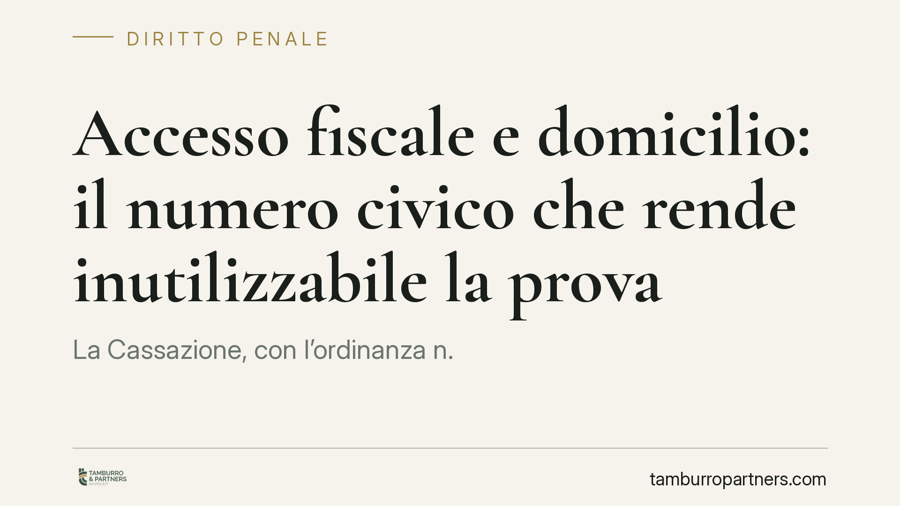

Accesso fiscale e domicilio: il numero civico che rende inutilizzabile la prova
La Cassazione, con l'ordinanza n. 27858/2026, ha dichiarato inutilizzabile la contabilità parallela rinvenuta in un locale di terzi, con ingresso su diverso numero civico, non coperto dall'autorizzazione all'accesso. Il principio richiama l'inviolabilità del domicilio e la nuova regola sull'inutilizzabilità delle prove illegittime. Un dettaglio apparentemente formale che incide sulla tenuta dell'intero accertamento.

Il caso
I verificatori effettuano un accesso presso i locali autorizzati di un'impresa. Durante l'ispezione rinvengono documentazione extracontabile - la cosiddetta "contabilità parallela" - in un locale attiguo, ma formalmente distinto: appartiene a un terzo e vi si accede da un diverso numero civico.
Su quella documentazione si fonda la ripresa a tassazione. Il contribuente eccepisce l'illegittimità dell'acquisizione. La Corte di Cassazione, con l'ordinanza n. 27858/2026, gli dà ragione: la prova è inutilizzabile.
Inquadramento normativo
L'accesso ai locali destinati all'esercizio dell'attività è disciplinato dall'art. 52 del DPR 633/1972 (richiamato, in materia di imposte dirette, dall'art. 33 del DPR 600/1973). L'autorizzazione del capo dell'ufficio - o del procuratore della Repubblica nei casi previsti - delimita in modo preciso i luoghi in cui i verificatori possono operare.
Il punto è proprio la delimitazione. L'autorizzazione non è un lasciapassare generico: copre determinati locali, individuati fisicamente. Un ambiente che fa capo a un soggetto diverso, con accesso autonomo da altro numero civico, non rientra nel perimetro autorizzato. Entrarvi e acquisire documenti significa superare i confini dell'atto, con potenziale lesione dell'inviolabilità del domicilio tutelata dall'art. 14 della Costituzione.
Su questo si innesta l'art. 7-quinquies dello Statuto del contribuente (introdotto dal D.lgs. 219/2023), che sancisce l'inutilizzabilità degli elementi di prova acquisiti in violazione di legge. La norma recepisce in via generale un principio prima affidato all'elaborazione giurisprudenziale: ciò che è raccolto illegittimamente non può sorreggere l'accertamento.
Perché la decisione conta
La pronuncia conferma che la forma, nell'accesso fiscale, è sostanza. Non si tratta di cavilli: la delimitazione dei luoghi autorizzati è la garanzia che bilancia il potere di controllo con la tutela del domicilio e dei terzi estranei alla verifica.
Il profilo rilevante è duplice. Da un lato, la documentazione rinvenuta fuori perimetro è inutilizzabile anche quando, nel merito, dimostrerebbe l'evasione. Dall'altro, l'inutilizzabilità può travolgere l'intero accertamento se la ripresa si fonda in modo decisivo su quella prova.
Va segnalato il risvolto penale. In presenza di soglie di punibilità superate, la contabilità parallela può integrare il presupposto di reati tributari (ad esempio dichiarazione infedele o fraudolenta). Se la prova nasce da un accesso illegittimo, la questione dell'utilizzabilità si ripropone anche nel processo penale, con regole proprie e con un vaglio autonomo del giudice penale sulla legittimità dell'acquisizione.
Implicazioni pratiche
Per il contribuente sottoposto a verifica, il messaggio è chiaro: l'esito dell'accertamento può dipendere da come - e dove - la prova è stata raccolta. Un documento schiacciante perde valore se acquisito oltre i limiti dell'autorizzazione.
Per chi opera in contesti con più unità immobiliari, locali condivisi o spazi intestati a soggetti diversi, la distinzione tra ambienti autorizzati e non autorizzati diventa centrale. Lo stesso vale per i depositi, gli uffici di società collegate e le abitazioni, che godono di tutela rafforzata.
Resta fermo che l'eccezione di inutilizzabilità va sollevata e documentata. Non opera in automatico: richiede la ricostruzione precisa dei luoghi, dei confini dell'autorizzazione e delle modalità dell'accesso.
Cosa fare in concreto
- Verbalizzate tutto durante l'accesso: annotate i locali effettivamente ispezionati, gli indirizzi, i numeri civici e il punto esatto in cui ogni documento è stato rinvenuto.
- Confrontate l'autorizzazione con i luoghi: controllate che ogni ambiente ispezionato rientri nell'atto autorizzativo e che gli spazi di terzi siano trattati separatamente.
- Chiedete copia dell'autorizzazione e dei relativi presupposti, verificando l'autorità che l'ha rilasciata e l'eventuale intervento del procuratore della Repubblica.
- Non firmate dichiarazioni o riconoscimenti sulla documentazione extracontabile senza una preventiva valutazione tecnica.
- Agite tempestivamente: l'eccezione di inutilizzabilità va costruita subito, perché si fonda su elementi di fatto che tendono a disperdersi.
La pronuncia ribadisce un equilibrio: il potere di controllo è ampio, ma incontra confini precisi. Superarli non è un dettaglio procedurale, ma una violazione che può privare l'accertamento del suo fondamento probatorio.
---
Contributo informativo a cura di Tamburro & Partners - Avv. Giuseppe Tamburro. Non costituisce parere legale.
Ogni condominio ha una storia a sé.
Se gestisci un'amministrazione e vuoi un confronto su una specifica questione condominiale, scrivi allo studio. Ti rispondiamo entro un giorno lavorativo.